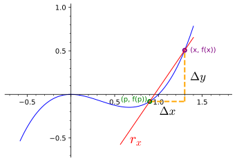

Nota 3.4.1.
Seja \(y = f(x)\text{.}\)
\begin{equation*}
\frac{dy}{dx} = f'(x) = \lim_{\Delta x\rightarrow 0} \frac{f(x+\Delta x)-f(x)}{\Delta x}.
\end{equation*}
Fazendo \(\Delta y = f(x+\Delta x)-f(x)\text{,}\) temos
\begin{equation*}
\frac{dy}{dx} = f'(x) = \lim_{\Delta x\rightarrow 0} \frac{\Delta y}{\Delta x}.
\end{equation*}

A notação \(\frac{dy}{dx}\bigl\vert_{x=x_0}\) é usada para indicar \(f'(x_0)\text{.}\)
Na notação de Leibniz, a derivada de \(y = f(x)\text{,}\) em \(x\) é indicada por \(\frac{df}{dx}(x)\text{.}\)